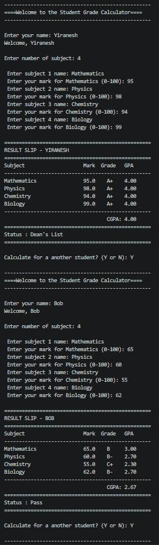
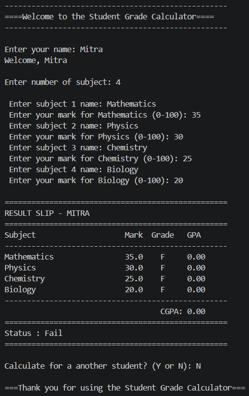

Project 01
Student Grade Calculator
I built this to practise calculations, conditions, repeated input, and clear result formatting.
- Calculates letter grade and GPA for each subject
- Computes overall CGPA
- Shows Dean's List, Pass, or Fail status
- Supports multiple students in one session
What I learned: This project taught me how to organise conditions clearly and make program output easier for a user to read.
View source code
